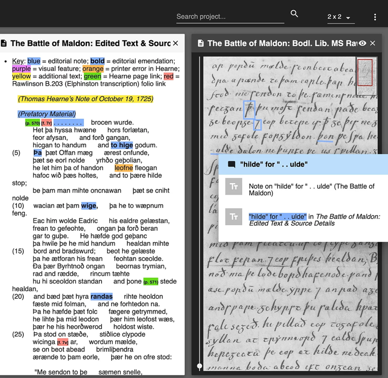
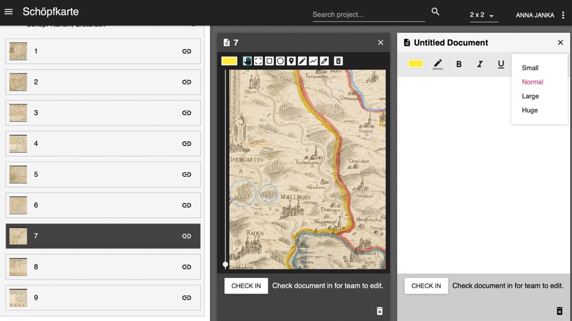

Digital Mappa – Simple and Web-based Annotations
Table of Contents
Abstract
How does Digital Mappa, a browser-based annotation tool, fit into the current landscape of Virtual Research Environments? How is an intuitive WYSIWYG graphical user interface suited for simple (scholarly) editions and image-text representations? What about involving different users via crowdsourcing? For this review, we took three distinct perspectives (user, teacher, and backend admin) and tested the tool for text annotation but furthermore for linking images with text. Digital Mappa proves to be a stable, not-so-easy-to-set-up tool that covers a lot of ground concerning annotation and image linking. Subsuming, we describe a mature system that allows for easy editing, suitable in the classroom. Critically, it has been assessed that the tool refrains from standards (such as TEI XML) and lacks capabilities to involve larger groups (e.g. for crowdsourcing).
Opening the review
The reviewer
This review aims to look from a multitude of perspectives at Digital Mappa 2.0 (henceforth DM). For this reason, we assembled a group of people that wanted to work with the tool as annotator (Anna Janka), scholar and teacher (Tobias Hodel), as well as system administrator and developer (Jonas Widmer).
Identification of the reviewed tool
Digital Mappa 2.0 is an open-source DH platform for open-access workspaces, projects, collaborations, and scholarly publications/digital edition platforms, focusing on linking of images and text annotations. DM is well documented, and the descriptions on its website are exhaustive, it is hosted on GitHub.
Stage of development
The first version of Digital Mappa was released in 2018 after more than a decade of development and early releases. In 2020 version 2.0 with an entirely refactored platform was released. Currently, bugs are being fixed.
Due to the very recent release: This review did not take the latest features of version 2.1 (especially layering of annotations) into account!
Identification of the reviewing platform
We tried to install DM on a virtual server of our own (based on Ubuntu 20.04 LTS) but failed to do so due to miscommunication between the front- and the backend. Furthermore, the proposed installation involving the use of AWS as a storage hub did not lead to a working system. In the end and for this evaluation, we relied on an already running installation of the University of Zurich, hosted by “Digitale Lehre und Forschung”. The front end of DM was accessed through state-of-the-art browsers such as Chrome (version 94.0.4606.71) and Firefox (version 92.0.1).
General introduction
Digital Mappa has been developed in order to allow for the annotation of (historical) maps. Due to the simple graphical user interface, developers as well as involved scholars quickly realized that DM could not only be used for this task but, in general, to create annotated data on any image files and even texts. This led to the development of DM with the idea of providing an exhaustive digital scholarly edition environment (in the sense of an IDE: integrated development environment). The goal of the tool remains to offer easy-to-use annotation capabilities within web browsers.
The tool is thus not only suited for very specific projects (focusing on maps) but addresses, in general, the needs of the edition community, especially if the annotation of facsimile is involved. As an end-user, any scholar and student independent of pre-existing knowledge and technical expertise are envisioned.
Credit and funding
The tool has been created and is maintained by Martin Foys (University of Wisconsin-Madison) as project director in collaboration with the Center for the History of Print and Digital Culture (also at the University of Wisconsin-Madison) as well as the Schoenberg Institute for Manuscript Studies (University of Pennsylvania).
Most of the refactoring for version 2.0, which is the focus of this review, seems to be carried out by Performant Software Solutions, a digital humanities-close software development company. The tool is available open-source and hosted on GitHub. Digital Mappa and its history and development are comprehensible and well documented.
Transparency
Information about the installation is available as readme on GitHub. Further information about the project is available on its website. Digital Mappa is licensed under a GPL 3.0-License.
Methods and Implementation
State of the art
Currently and very broadly speaking, there exist two ways to create scholarly editions: On the one hand, digital editions based on TEI XML are often carried out in interdisciplinary teams creating back- and front-end parallel to the mark-up of text. On the other hand, there are also text editor-based (e. g., MS Word or LaTeX) editions in use that mimic the typesetting of print and are – after preparation of the text – exported to professional layout and printing companies.
DM has to be located in-between these two approaches, as it allows to annotate images and textual entities. For annotation and linking, no knowledge about mark-up languages is necessary. At the same time, advantages of mark-up languages (ontologies in the broadest sense) are not provided but need to be defined on a project basis. From another perspective, DM offers a WYSIWYG (what you see is what you get) approach, and all information can be accessed online right after entry.
DM is a self-sufficient platform that was not built to export annotated documents. Its data model does not rely on TEI XML and DM is therefore not part of the TEI community. Very simple mark-up for text (mostly focusing on formatting, like bold/italicized) can be added, but the focus lies on marking images and connecting them to textual structures. Of course, from a technical point of view, it would be possible to export annotations, but this would require several transformation processes that needed to be prepared by future users.
Very loosely, we can identify relations to manual text annotation tools (like CATMA or Annotation Studio) as well as image annotation tools (e. g. within Mirador). The map annotation capability is comparable to Recogito but doesn’t offer the linking to norm data. There is no automatization (e. g. recognition of named entities, identification of visual structures) currently included in Digital Mappa. The combination of text and image annotation is still a rather unique mix and, thus, a unique selling point of DM.
Discipline and methodology
The tool facilitates the annotation and interlinking of images and textual entries. This again allows marking certain aspects, for example, on a historical, digitized map. Already during the development of DM 1.0, it has been realized that with the toolset also editions can be obtained that are tightly intertwined and create a close connection between a documentary edition as well as annotated images. Although such a simple, visual edition can be created through the offered toolset, certain design decisions (shortcomings for certain approaches) need to be taken into account: In order to add an apparatus, it would be necessary to either use manually added footnotes (not semantically annotated) or link text entries (which is possible but doesn’t really add to the usability of an edition).
How it works

From a technical point-of-view, DM uses Ruby-on-Rails and embeds it in a Heroku-App. Since a browser-based web solution was envisioned from the start of the project, the choice to release DM as a Heroku-App seems sensible and supports (thanks to the environment) a relatively quick setup. Right after finishing this review, further updates of DM were made which are not covered in this review; amongst other things, a docker-compose/docker-images was released to the GitHub repository.
Input, output, and data modeling
Input is very limited, and images can be imported as JPEG. IIIF-compliant images can be imported directly as well. Text is typically imported through copy and paste. Output in other formats, other than in the form of the web-page, is not foreseen. Therefore, the data model of DM cannot be compared to scholarly digital editions based on TEI XML or Linked Data knowledge graphs. Unicode (UTF-8) is supported, which makes the DM language independently usable and interesting for projects involving non-western character sets.
Performance
Once installed, the tool performs even on ‘slim’ virtual machines (a 2 CPU, 4 GB setup was used) decently and without any problems regarding loading or processing time. Access to rather large JPEG files (~15 MB) does not pose any problems. Technically, it would be possible to embed images stored on other servers and made available via IIIF manifests. Access times to such (larger) files have not been tested.
With regards to accuracy, no negative experiences were observed or have been reported by instructors or students. The website reacts as intended, clicks get recorded, and polygons (or other shapes) get drawn according to mouse movements.
Logs and trackability
Logs are being generated for the installation process. Besides that, we couldn’t identify any logs.
Application and results
DM features a few showcase projects on their web-page. Besides that, we did not identify further publicly available use cases. The showcases already demonstrate a wide variety of possible scenarios to use DM. From “Virtual Mappa” (the classical use-case of DM), to a facsimile annotation of old English poetry and furthermore a library of stains that have been analysed using spectral analysis. In respect of the last example, DM was used as closely interlinked documentation with visual as well as textual components.
Overall, it becomes evident that with some creativity, DM should not only be used in the intended context (annotation of images, esp. maps), as more pathways need to be explored. For art history classes (as an invented example), DM could be used to produce annotated image corpora and thus replace traditional seminar papers.
Example
Using DM, our team of four people partially marked and annotated a historical map of the Bernese territorial dominion in the 16th century. In order to work with the map, a user could check out a single document file on DM (e. g. the part of the map or a textual annotation), which was then blocked for the other team members. Our map consisted of nine pages, and therefore nine single documents on DM, and because of that, our team could still work collaboratively.
Our goal was to tag different geographical elements, like mountains, lakes, rivers, or woodland, as well as cities and villages under Bernese reign at the time. The tools on DM function very intuitively. Users can choose between eight colors, draw lines with the drawing tool, or select pre-made shapes (rectangle or circle) to drag and drop on the map. A difficulty our team encountered was highlighting longer entities (like rivers) because they were separated into different parts (e. g. interrupted by bridges). DM then generated different tags for every part of the river, and we had to add the annotation to every part of the river since one annotation could not be linked to multiple markings.
After marking our geographical elements and localities, our team annotated them by referencing relevant text documents about the elements from the same century and websites from the present day. The annotations were relatively easy to create since the elements of the annotation tool were very basic and limited but sufficient. One could only choose between 5 different font sizes, bold/italicize/underline/highlight text, and choose between different fonts. While writing our text, we could embed website links directly in the annotation tool. The icons were the same as in well-known word processors (like MS Word or GoogleDocs), making the use very easy, straightforward, and intuitive.
Usability, sustainability and maintainability
Access
As already mentioned before, a GitHub Repository gives access to all necessary files, deployment as a Heroku App is foreseen.
Dependencies
The GitHub-readme describes DM as a Ruby-on-Rails 5.x application. Since DM is available for deployment on Heroku, there is a good description of how to install and configure it. For Heroku deployment, the Heroku-18 stack is required.
The local installation as a development environment indicates the required installation of PostgreSQL v11.1, Ruby 2.5.7, and Bundler 2.2.23. Since there are plenty of online descriptions on how to set up this stack, it is not described in the GitHub-readme. All backend dependencies are in the Gemfile (installation with Bundler). Front-end JavaScript dependencies can be installed through Yarn. Unfortunately, several dependencies are not up-to-date or deprecated, and there is the need to find fitting and working versions.
Documentation
The online documentation for viewers and creators on the DM web-page is useful and accurate. The main features are described in video sequences. Some known issues and workarounds are listed, fixes in future versions are noted.
The documentation and step-by-step instructions for installation and configuration focus on the Heroku deployment and are available in the GitHub-readme. As mentioned in “Dependencies”, the Ruby-on-Rails stack installation for local deployments is not described. The local development environment deployment instructions are not well documented, and there are some skills (like setting up a PostgreSQL database) required to successfully assemble the platform.
Support
For our small experiment, and since we didn’t plan to deploy the platform, we did not rely on support from the developers. The community is being maintained through a Twitter account and a Facebook group. Due to the publication on GitHub, it is always possible to report bugs right at the source.
Learnability
DM works intuitively and does not require a lot of explanation (cf. also the chapter “Example”). Within a classroom setting, DM can be easily introduced and tested out in a 60-minute slot. Although no proper error messages are being shown (if clicks or draws are not allowed), users become quickly aware of shortcomings due to no reaction by the platform. The design follows state-of-the-art expectancies and symbols that guide users to possible pathways.
Build and install
As soon as the indicated stack is fitting the current DM-version, the deployment on Heroku is simple and needs a few configurations. For local deployment, there is specific experience required, as the installation of DM is challenging. Dependencies have to be modified since they are not up-to-date: In March 2021, the dependency files were from November 2019. As already mentioned, some bug fixes were released between August and October 2021; it is, therefore, possible that the mentioned shortcomings are already fixed. Uninstallation has not been tested.
Test
A basic template for testing the main features is implemented, but it is necessary to write case-specific tests. For our case, we didn’t use the test function.
Portability and interoperability
As stated already, Digital Mappa is run as a webserver on a Heroku App. Heroku allows the integration of different programming languages, and in the case of Digital Mappa, the well-established Ruby-on-Rails has been chosen. Due to this, the setup ought to be highly portable and interoperable. End-user access to the platform is possible through any recent web browser (Mozilla Firefox, Google Chrome, Safari, etc.). During our evaluation, no problems from this site have been encountered.
At the moment, we are not aware of any other tools that have been developed to add to the functionality of DM. We are also unsure if this is necessary since the tool is constructed as a stand-alone edition platform.
Source, license, and credits
Digital Mappa 2.0 is provided open source under a GPL-3.0 Licence. A free installation on any infrastructure allowing to set up a Heroku app is possible. As far as we can see, development is entirely taking place on GitHub. At this moment (October 2021), eleven branches have been created, hinting at a somewhat active but not very big community of developers. Due to the fact that most contributors are mentioned on the web page, there is no indication on who contributed in what manner (except, of course, that it would be possible to track past pushes in order to get an idea).
Analysability, extensibility, reusability of the code
For this review, we didn’t analyse the provided code.
Security and privacy
There is no information about data handling provided to the users, and we get no clear indication of where DM is deployed and which services are used (e. g., Heroku, AWS S3 bucket). Accordingly, we recommend deploying the system of its own servers or using DM setup by known providers (like university libraries) in order to not risk misuse of provided data. From the point of the structure of the provided framework, there is not a high risk of losing data due to breaches.
Supportability and maintenance
Due to recent updates in August and October 2021 (the first part of this review was prepared in spring, the second part in autumn 2021), we reckon that version 2.1.0 (which would be called 1.0 of DM2) will fix certain problems and allow for easier deployment.
Citability
The tool does not offer citations or citation guidelines.
User interaction, GUI, and visualization
User profile
The proto-typical user/contributor is probably a humanities scholar or student who does not want to deal with technical requirements and standards in-depth. The classroom setting has already been mentioned and allows for the quick introduction of fundamental approaches to the (digital) humanities. Annotations and especially the need to annotate images or texts is the main capability realized within the platform.
Technical interfaces and GUI
The core idea of DM is to offer an easy and intuitive way to annotate images and provide textual information that can be formatted and enhanced with embedded images. The tool is web-based and offers a graphical user interface (GUI) that can be accessed through common browsers. The GUI is oriented towards current web practices and is easily understandable. In general, it needs to be stressed that the visual components of DM are its main advantages, which makes the tool ready for use in teaching and outreach settings.
On the left side of the interface is a list of all the different documents in one collection. By clicking on a document, it gets displayed on the right side. The menu on the left cannot be hidden while working on or looking at a document. If one wants to work on a single page, there is a check-out box next to every file that the user can click. There are two main tools the user can work with on DM, a tagging and an annotation tool.

The toolbars of the annotation and marking tools consist of standard symbols used in other programs, and the variety of tools is wide enough to individualize an annotation or differentiate different markings, but not too extensive. For example, a user can select between four different font sizes to write an annotation. When the user goes over a symbol with his/her mouse, the symbol's function gets explained (B = “bold selected type”). After the documents have been edited and annotations were added, the user can search for different keywords in the top right of the interface. All documents are included in the search. Once a keyword is selected, the corresponding document pops up on the screen.
Visualization
DM does not provide specific visualizations. However, we would not expect such a thing in a platform like DM in the first place. Nevertheless, it is an easily individualizable tool. As a user, one can display documents and annotations that are important and hide more irrelevant parts. Additionally, the different documents can easily be moved around on the interface, and therefore it is possible to display, for example, documents 1 and 4 next to each other to compare them with each other and visualize the data in different ways.
User empowerment
There is not one fixed workflow defined for the use of DM. Also, no ontologies or gazetteers are implemented in DM that need to be used. On the one hand, we encounter this as formidable liberty towards use in quite different settings. On the other hand, this means that there is no support of existing standards and solutions, e. g., towards norm data, given.
Accessibility
All browser-based tools (e. g., zooming, read out loud) are supported. Besides this, we were not able to identify particular features.
Conclusion
General characteristics and realization of aims
DM is a mature and performant system that allows for easy and barrier-free use in different settings: from simple digital editions to in-depth text annotations, DM offers a general approach that leads to pragmatic as well as presentable results. Since it is an annotation and publication system in one, contributors will be able to inspect and share their results right away and directly through the platform.
Achievements and scholarly contributions
Opposed to a multitude of recently developed tools, workbenches, and standards (e. g., ontologies), DM aims at a very general but active user group in need of easy-to-use annotation and publication tools. Specialization and implementation of the latest technological developments (read, e. g., Linked Open Data) have not been intended but somewhat sidelined, focusing on very few approaches that work flawlessly.
We expect that due to DM, a variety of rather short but potentially complex digital artifacts will be created and made accessible. Therefore, DM fits in a small but essential niche for (visually appealing) documents that are not treated within large textual editions or don’t merit a stand-alone web-page.
Particularities and limitations
DM demonstrates that it is possible to provide an easy-to-use platform with a solid design. Congrats to the developers for this.
Suggestions for improvement
In version 0.3.2. (March 2021) the project seemed orphaned since dependencies were from November 2019. In July 2021, the development went on, and version 0.5.0 was released in August. In October, we got aware of the release of version 1.0.0.
When we started using DM, we had an application in a classroom setting in mind for which the tool worked very well and flawlessly (from a viewer and contributor perspective). The implementation of norm data (e. g., support of Geonames) is, of course, possible in the form of linking, but currently, there is no clear path towards using such data. In this regard Recogito is currently ahead. At the same time, we started discussions about using DM as a crowdsourcing application in order to deeply annotate one specific historical map. At the current stage of development, DM does not seem to be an adequate tool for this approach. Although the check-out functionality hinders overwriting contributions, the user management is not really convenient (every user needs a dedicated account with an individual password). While collaborating with other users is possible, only one person can work on a document at a time. The ability to check out an annotation box instead of the whole page would make a crowdsourcing approach more feasible. Furthermore, certain text entities were envisioned in specific (fixed) structures. This is, for the moment, not supported but could be an interesting add-on. Moreover, we would like to have more possibilities with regards to extraction/export of textual files (at least in plain text, ideally as TEI XML).
@article{digital-mappa,
author = {Hodel, Tobias and Janka, Anna and Widmer, Jonas},
title = {Digital Mappa – Simple and Web-based Annotations},
journal = {RIDE – A review journal for digital editions and resources},
number = {15},
year = {2022},
doi = {10.18716/ride.a.15.1},
url = {https://doi.org/10.18716/ride.a.15.1},
}TY - JOUR
AU - Hodel, Tobias
AU - Janka, Anna
AU - Widmer, Jonas
TI - Digital Mappa – Simple and Web-based Annotations
T2 - RIDE – A review journal for digital editions and resources
IS - 15
PY - 2022
DA - 2022/12
DO - 10.18716/ride.a.15.1
UR - https://doi.org/10.18716/ride.a.15.1
PB - Institut für Dokumentologie und Editorik e.V.
LA - en
ER - Hodel, T., Janka, A., & Widmer, J. (2022). Digital Mappa – Simple and Web-based Annotations. RIDE – A review journal for digital editions and resources, (15). https://doi.org/10.18716/ride.a.15.1Hodel, Tobias, et al.. "Digital Mappa – Simple and Web-based Annotations." RIDE – A review journal for digital editions and resources, no. 15, 2022. https://doi.org/10.18716/ride.a.15.1.Hodel, Tobias, Anna Janka, and Jonas Widmer. "Digital Mappa – Simple and Web-based Annotations." RIDE – A review journal for digital editions and resources, no. 15 (2022). https://doi.org/10.18716/ride.a.15.1.